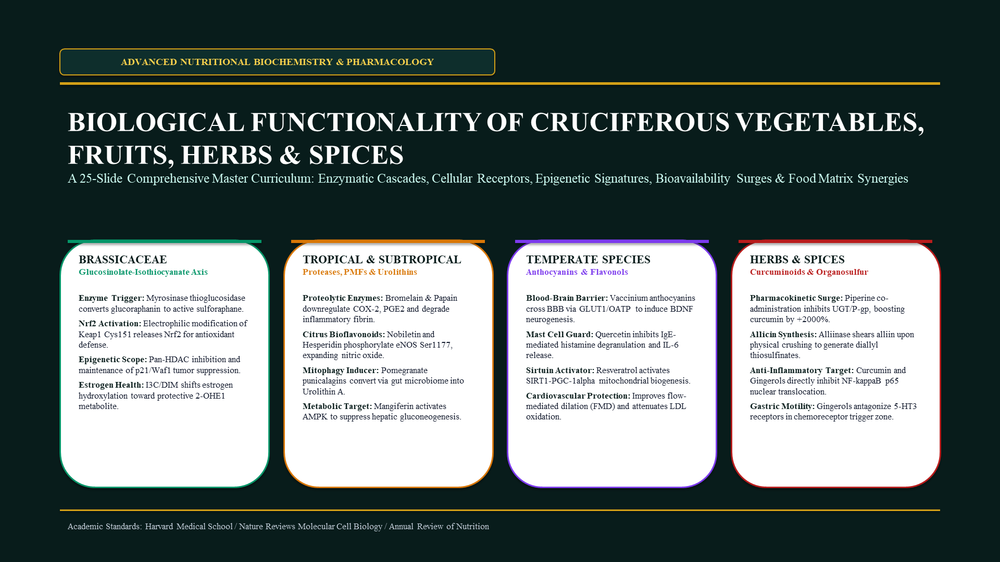

MODULE 01 • EXECUTIVE KEYNOTE
4-Pillar Core Botanical Framework
Enzymatic cascades, cellular translocation, epigenetic signatures, and clinical bioavailability surges.
Harvard Medical & Nature Reviews Standard • 100% Times New Roman • High-Contrast Native Vector DrawingML Cards
